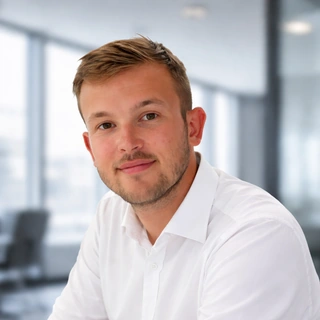

Romain Maunier : designer & développeur freelance
Je suis Romain Maunier, fondateur de RM Dev Design, designer et développeur freelance à Paris et à distance. Je réunis design des interfaces, prototypage et développement pour rendre un projet testable.
Faire avancer le design et le code ensemble
Je travaille à l’endroit où un parcours doit devenir une interface ou une interaction fonctionnelle. Une maquette peut servir à décider ; un prototype Unity ou web permet ensuite de confronter cette décision à l’usage.

Des projets, du design au développement
J’ai travaillé sur des applications Unity pour l’automobile et la sensibilisation aux risques industriels, ainsi que sur des interfaces de maison connectée.
Selon le projet, je développe l’application ou je conçois l’interface et prépare la livraison aux développeurs. J’interviens aussi sur des configurateurs 3D en ligne, du viewer au backend.